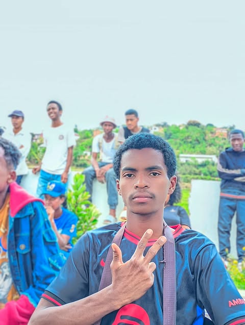

RANDRIANANTENAINA
Jean
Odilon
Étudiant Université de Fianarantsoa (EMIT)

À propos de moi
Je suis étudiant à l’Université de Fianarantsoa depuis 2025.
Je m'intéresse à l’informatique et au développement web.
Informations personnelles
- Nom : RANDRIANANTENAINA
- Prénom : Jean Odilon
- Date de naissance : 16 février 2006
- Lieu : Ikalamavony
- Age : 20 ans
- Situation : Célibataire
- Nationalité : Malagasy
Compétences
- HTML
- CSS
- Python
- JavaScript
- Français